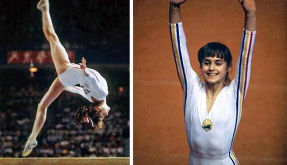
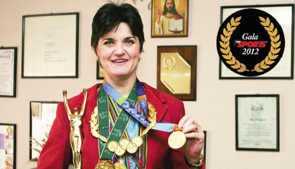
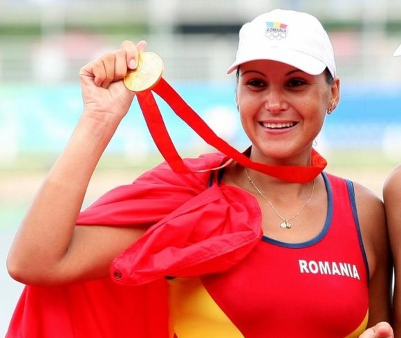
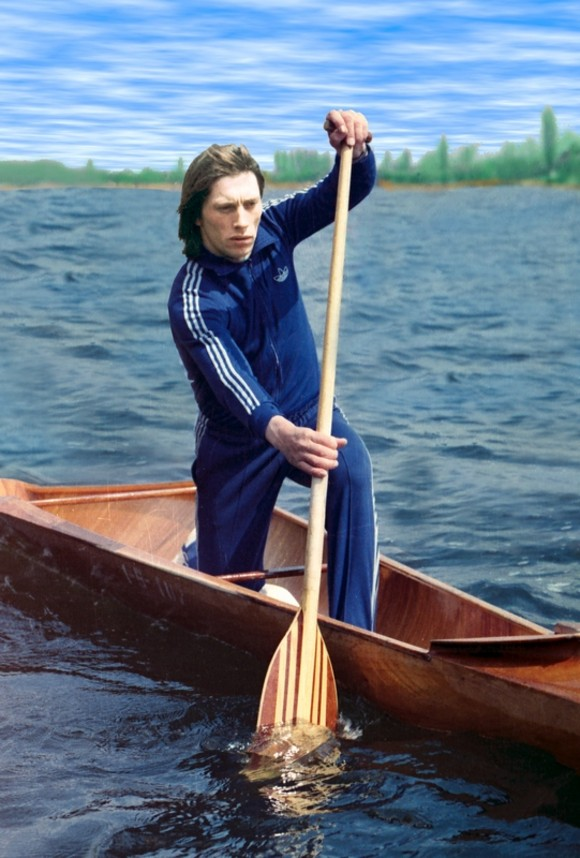
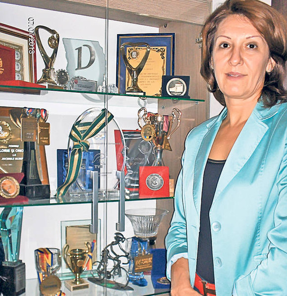
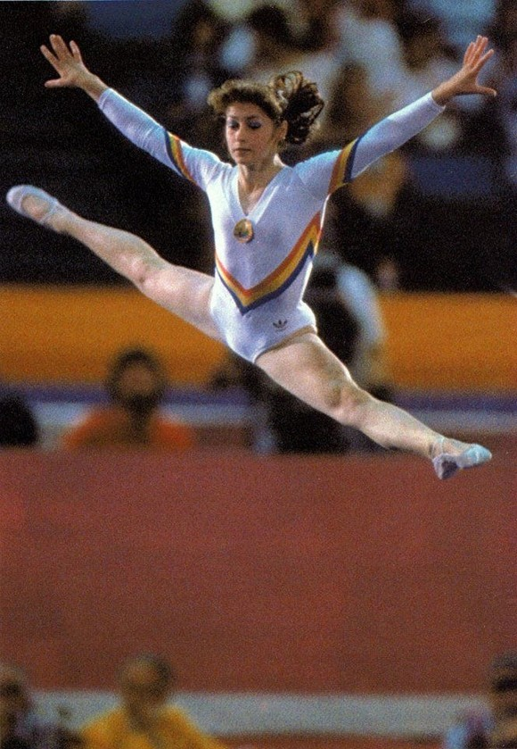

Cei mai medaliati sportivi romani la Jocurile Olimpicice
Nadia Comaneci-9 medalii

În 1976, la doar 14, Nadia Comăneci a cucerit Montrealul și lumea întreagă: a fost prima gimnastă din lume care a obținut scorul perfect de 10,00 Este considerată una dintre cele mai bune sportive ale secolului al XX-lea și una dintre cele mai bune gimnaste ale lumii, din toate timpurile. În 1976, la doar 14, a cucerit Montrealul și lumea întreagă: a fost prima gimnastă care a obținut scorul perfect de 10,00 la Olimpiadă (de șapte ori), dar a câștigat și trei medalii de aur (la individual compus, bârnă și paralele), o medalie de argint (echipă compus) și bronz (sol). 9 medalii (5 aur, 3 argint, 1 bronz).

În 2000, Elisabeta Lipă a fost declarată cea mai bună canotoare a secolului de către Federaţia Internaţională de Canotaj. În 2000, a fost declarată cea mai bună canotoare a secolului de către Federaţia Internaţională de Canotaj. A obţinut 5 medalii de aur, 2 de argint şi una de bronz la şase olimpiade, a fost de 25 ori campioană a României. În 1984, obținea prima medalie de aur la Olimpiada de la Los Angeles, în proba de dublu vâsle. Urmează argint la Seul în ʼ88 (dublu vâsle) și bronz (4 vâsle). În 1992, la Barcelona, cucerește aurul la simplu vâsle si argint la dublu vâsle. Urmeză 3 titluri olimpice la 8+1 vâsle.

În total, canotoarea Georgeta Damian a câștigat 6 medalii (5 aur, 1 bronz) la Jocurile Olimpice 6 medalii (5 aur, 1 bronz). Campioană olimpică și mondială, la proba de 8+1 și la proba de 2 rame alături de Viorica Susanu: 2000: JO Sydney, aur la 2 rame și 8+1; 2004: JO Atena, aur la 2 rame și 8+1; 2008: JO Beijing, aur la 2 rame; 2008: JO Beijing, bronz la 8+1.

Ivan Patzaichin a participat la cinci Jocuri Olimpice: Mexico 1968, Munchen 1972, Montreal 1976, Moscova 1980 și Los Angeles 1984 A participat la cinci Jocuri Olimpice: Mexico 1968, Munchen 1972, Montreal 1976, Moscova 1980 și Los Angeles 1984. La cele cinci ediții a cucerit 7 medalii: 4 de aur și 3 de argint. Din 1976, a devenit antrenor, însă activitatea de antrenorat a început-o în anul 1985. În această calitate a participat împreună cu elevii săi la 5 ediţii ale Jocurilor Olimpice de Vară: Barcelona 1992, Atlanta 1996, Sydney 2000, Atena 2004 şi Beijing 2008. De-a lungul carierei de antrenor a cucerit peste 150 de medalii olimpice, mondiale şi europene. Doina Ignat- 6 medalii

De-a lungul carierei, canotoarea Doina Ignat a cucerit 27 de medalii De-a lungul carierei, a cucerit 27 de medalii (16 de aur, 8 de argint și 3 de bronz) la Campionate Mondiale, Olimpiade și Cupe Mondiale, în perioada 1997-2007, fiind clasată de Federația internațională de specialitate pe locul 3 în topul celor mai bune canotoare din toate timpurile. A participat la patru Olimpiade de unde s-a întors cu patru medalii de aur, una de argint și una de bronz. Ecaterina Szabo- 6 medalii

La Jocurile Olimpice din 1984 (Los Angeles, SUA), uEcaterina Szabo a câștigat medaliile de aur în toate finalele în care s-a calificat, sărituri, sol și bârnă Multiplă medaliată la Jocurile Olimpice din 1984 (Los Angeles, SUA), unde Ecaterina Szabo a câștigat medaliile de aur în toate finalele în care s-a calificat, sărituri, sol și bârnă, la egalitate cu colega sa de echipă Simona Păucă. În total, 6 medalii: 4 aur, 1 argint, 1 bronz.Elisabeta Lipa-8 medalii
Georgeta Damian- 6 medalii
Ivan Patzaichin– 7 medalii